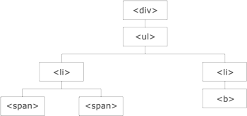

What is Traversing?
jQuery traversing, which means "move through", are used to "find" (or select) HTML elements based on their relation to other elements. Start with one selection and move through that selection until you reach the elements you desire.
The image below illustrates an HTML page as a tree (DOM tree). With jQuery traversing, you can easily move up (ancestors), down (descendants) and sideways (siblings) in the tree, starting from the selected (current) element. This movement is called traversing - or moving through - the DOM tree.

Illustration explained:
- The "div" element is the parent of "ul", and an ancestor of everything inside of it
- The "ul" element is the parent of both "li" elements, and a child of "div"
- The left "li" element is the parent of "span", child of "ul" and a descendant of "div"
- The "span" element is a child of the left "li" and a descendant of "ul" and "div"
- The two "li" elements are siblings (they share the same parent)
- The right "li" element is the parent of "b", child of "ul" and a descendant of "div"
- The "b" element is a child of the right "li" and a descendant of "ul" and "div"
Tutorial link